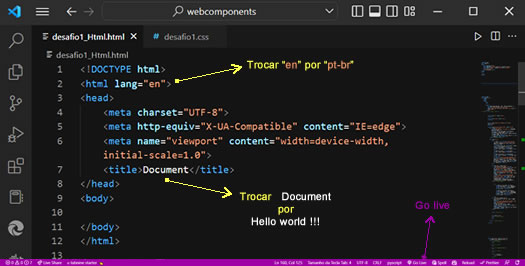
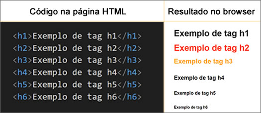

Vamos falar um pouco sobre HTML, das principais ferramentas utilizadas para a construção de uma página.html, da sua estrutura básica, as tags mais utilizadas, como criar links, listas e muito mais.
FERRAMENTAS UTILIZADAS
É preciso ter todas as ferramentas instaladas e configuradas.
Caso ainda não tenha, acesse os sites abaixo e prepare tudo para poder começar a <codar> .
... Verifique e mantenha seus softwares e apps instalados sempre atualizados...
Qualquer dúvida, entre em contato. 😄
Visual Studio Code é um editor de código-fonte desenvolvido pela Microsoft para Windows, Linux e macOS.
Inclui suporte para depuração, controle de versionamento Git incorporado, realce de sintaxe, complementação inteligente de código, snippets e refatoração de código.Wikipédia
Após instalar o VSC, vá na barra lateral esquerda / extensões e na barra de pesquisa superior da barra, pesquise por LIVE SERVER e instale.
O Live Server permite que você veja no navegador o resultado do que você está codando. Para isso, após ter salvo e iniciado o seu arquivo.html, vá na barra inferior e clique em Go Live e será aberta numa nova aba com a saída visual do seu código, igual como ficará no navegador.
Após instalado, é recomendável fazer algumas configurações e instalações de outras extensões que te ajudarão a obter melhor desempenho enquanto estiver utilizando essa ferramenta, como AUTO RENAME TAG, PRETTIER, COLOR HIGHLIGHT, COLORIZE, INDENT-RAINBOW, RAIMBOW BRACKETS, COPILOT e além desses existem muitos outros, cada um com sua funcionalidade . Na internet poderá facilmente achar vários tutoriais que o ajudarão nessa tarefa.
Estando com tudo funcionando corretamente, já pode começar a dar seus primeiros passos, ou <codigos> em HTML.
Chrome é um navegador de internet desenvolvido pela Google...para o Microsoft Windows, e mais tarde foi portado para Linux, Mac, iOS e Android...atualmente está disponível, em mais de 51 idiomas, para as plataformas Windows, Mac OS X, Android, iOS, Ubuntu, Debian, Fedora e openSUSE
É o navegador mais usado no mundo, com 66,93% dos usuários de Desktop, contra 10,63% do Microsoft Edge, 8,02% do Safari e 7,36% do Mozilla Firefox, segundo a StatCounter. Além de desenvolver o Google Chrome, o Google ainda patrocina o Mozilla Firefox, um navegador desenvolvido pela Fundação MozillaWikipédia
Inspetor de elementos do Chrome...Seu kit de ferramentas é essencial e vital para o desenvolvimento web e, por isso mesmo, é um ferramental indispensável para se ter no dia-a-dia.
É mais do que imprescindível saber mexer nas DevTools para inspecionar elementos, verificar conteúdos, debugar layouts, manipular estilos, simular diversos tipos de dispositivos...dpw
Abrir o INSPETOR de elementos é super fácil: Já na página do google chrome que deseja inspecionar, clique em qualquer lugar da tela com o lado direito do mouse e no menu que aparecer, embaixo, clique em INSPECIONAR, ou simplesmete pressione a tecla F12 do seu teclado.
Alguns outros browsers também oferecem essa ferramenta de forma similar.
Abordaremos 2 maneiras de criar a estrutura básica do HTML rapidamente
Na linha 1 do arquivo index.html, digitamos:
! e pressionamos enter
ou
html5 e pressionamos a tecla tab ou enter
O resultado será como a imagem abaixo

Fig.1 Troque "en" por "pt-br" e Document por Hello, world !!!
Na Fig.1, acima, a seta rosa indica onde está escrito Go live . Clique em Go live e veja o resultado no browser, que, dependendo da configuração, poderá estar incorporado dentro do seu VSC ou numa nova aba no navegador.
😄 Pronto. Você fez sua primeira página HTML 😄
TAGs HTML
Vamos começar com duas coisas muito importantes quando estamos codando:
Adicionar espaço entre palavras ou qualquer outro elemento.
Como fazer comentários no código sem que apareça no navegador.
Quando estamos codando, é muito comum precisarmos colocar espaço entre palavras, imagens, ou entre qualquer elemento
- Como podemos fazer isso?
- Usando & n b s p ; escrito junto, sem dar espaço
Código:
<p> Dando dois espaços entre as palavras: COMEÇO & n b s p ; & n b s p ; FIM< /p >
No navegador:
Dando dois espaços entre as palavras: COMEÇO FIM
E como fazemos um comentário no código?
- Usando o < !-- Comentário -->
Código:
<p> 1- Muito usado para deixar o código mais organizado. < /p >
<!-- Comentários não aparecem no navegador-->
<p> 2- Sempre bom usar para explicar o que está sendo codado. < /p >
No navegador:
1- Muito usado para deixar o código mais organizado.
2- Sempre bom usar para explicar o que está sendo codado.
Agora vamos falar sobre as TAGs básicas mais utilizadas e que estão de acordo com o HTML5
A maioria das tags tem uma abertura < > e um fechamento < / >
Algumas não precisam de fechamento, como por exemplo as tags b, br, hr e outras, como veremos mais adiante
Outras, por sua vez, é opcional utilizar fechamento, mas eu sempre uso, por questão de organização
< HTML >< /HTML > Tudo que estiver dentro dela será uma página html
< head >< /head > - Dentro dela ficam informações necessárias para a navegação, o título da página e links de referência para linkar, por exemplo, a página html a um arquivo css. Ver exemplo da tag head na Fig, 1
< body >< /body > - Dentro dela teremos o conteúdo de todo o site. Small> Ver Fig.1
Indo além dessa estrutura criada rapidamente, temos muitas outras tags elementares, como:
< header >< /header > Tag introdutória, normalmente contém uma tag < h1 >< /h1 >, para informar o assunto, título, introdução do site, uma ou várias imagens em formato de slider, ou um video, podendo ou não conter links.
Podemos usá-la dentro de algumas tags ao longo da página HTML, mas a usamos uma única vez dentro de cada tag .
< h1 >< /h1 > É recomendado usá-la apenas uma vez em cada página html.
É importante para SEO e as palavras-chaves usadas nessa tag indicam ao google o assunto principal da página.
Por alguns aspectos, às vezes não queremos que apareça no navegador, então podemos oculta-la usando o atributo hidden
Código:
< !-- No exemplo abaixo, o titulo aparecerá no navegador -- >
< header >
< h1 > Exemplo de uso da tag < q > h1 < q > para aparecer no navegador. < /h1 >
< /header >
No navegador:
Exemplo de uso da tag h1 para aparecer no navegador.
Código:
< !-- No exemplo abaixo, o titulo não aparecerá no navegador -- >
< header >
< p > 1- Exemplo de uso da tag < q > h1 hidden< q > para o item 2 não aparecer no navegador. < /p >
< h1 hidden> 2- Isso não vai aparecer no navegador < /h1 >
< /header >
No navegador:
1- Exemplo de uso da tag h1 hidden para o item 2 não aparecer no navegador.
h2 até h6
Tags usadas para títulos, subtítulos e assim por diante.
Cada uma dessas tags tem seu tamanho próprio (isso pode ser mudado e estilizado com css)
Definem o nível de hierarquia dos títulos numa página html, sendo que h1 é o de mais alta importancia e o h6 o de menor importancia.
Como já falamos anteriormente, o h1 é o mais importante inclusive para SEO e só deve ser usado uma vez em cada página html.
h2, h3, h4, h5 e h6, podem ser usados mais de uma vez em cada página.
Abaixo podemos ver como funciona

Fig.2 - Observe o efeito do css sobre as tags h2 e h3
Com CSS podemos estilizar nossa página - isso é tema para outro tutorial
< p >< /p > Tag usada para formar parágrafos
Código:
<p> 1- Pode ser usada para criar uma linha ou mais . < /p >
<p> 2- Podemos escrever um texto inteiro com essa tag. < /p >
<p>3- Tag usada para formar parágrafos, frases, textos...Tag usada para formar parágrafos, frases, textos...Tag usada para formar parágrafos, frases, textos...Tag usada para formar parágrafos, frases, textos...< /p >
No navegador:
1- Pode ser usada para criar uma linha ou mais.
2- Podemos escrever um texto inteiro com essa tag.
3- Tag usada para formar parágrafos, frases, textos...Tag usada para formar parágrafos, frases, textos...Tag usada para formar parágrafos, frases, textos...Tag usada para formar parágrafos, frases, textos...
< br > Cria um espaço entre as linhas.
Código
Navegador
<p> Linha 1 </p>
Linha 1
<p> Linha 2 </p>
Linha 2
<br>
<p> Linha 3 </p>
Linha 3
Ob. O exemplo acima foi construído com uma tabela
Use o inspetor de elementos para verificar como foi feita essa tabela e pratique construindo uma no seu Visual Studio Code
<p> - Abaixo temos um exemplo do uso dessa tag.< /p >
<hr>
<hr>
<p> - Acima temos um exemplo do uso dessa tag.< /p >
<p> - Essa tag pode ser estilizada com CSS.< /p >
No navegador:
- Abaixo temos um exemplo do uso dessa tag.
- Acima temos um exemplo do uso dessa tag.
- Essa tag pode ser estilizada com CSS.
< i >< /i > Deixa as palavras dentro da tag em itálico.
Código:
<p> 1- Isso é um <i > exemplo < /i > do uso dessa tag.< /p >
No navegador:
1- Isso é um exemplo do uso dessa tag.
< mark >< /mark > Deixa as palavras dentro da tag sublinhadas.
Código:
<p> 1- Isso é um <mark > exemplo do uso dessa tag.< /mark >< /p >
No navegador:
1- Isso é um exemplo do uso dessa tag.
< small >< /small > Deixa as palavras dentro da tag um pouco menores.
Código:
<p> 1- Isso é um < small > exemplo do uso dessa tag.< /small >< /p >
No navegador:
1- Isso é um exemplo do uso dessa tag.
< sup >< /sup > Deixa as palavras dentro da tag elevadas.
Código:
<p> H< sup > 2< /sup >O< /p >
No navegador:
H 2 O
< sub >< /sub > Deixa as palavras dentro da tag um pouco abaixo das outras palavras.
Código:
<p> CO < sub > 2 < /sub >< /p >
No navegador:
CO 2
< b >< /b > Deixa as palavras dentro da tag em negrito.
Código:
<p> Isso é um <b > exemplo < /b > do uso dessa tag. < /p >
No navegador:
Isso é um exemplo do uso dessa tag.
< strong >< /strong > Deixa as palavras dentro da tag em negrito da mesma forma que a tag b, sendo que a diferença é apenas questão de semântica de código para dar ênfase ao contexto.
Código:
<p> Isso é um <strong > exemplo < /strong > do uso dessa tag. < /p >
No navegador:
Isso é um exemplo do uso dessa tag.
< q >< /q > Coloca as palavras dentro da tag entre aspas.
Código:
<p> Isso é um <q > exemplo < /q > do uso dessa tag. < /p >
No navegador:
Isso é um exemplo do uso dessa tag.
< blockquote >< /blockquote > Utilizado para citações.
Observe abaixo a diferença quando usada com a tag cite e quando usada com a tag q
Código:
<blockquote> 1- Seja a mudança que você quer ver no mundo. < q > Mahatma Gandhi < /q ><blockquote >
<blockquote> 2- Um grande passo para a humanidade foi a descoberta da corrente alternada, por < cite > Nikola Tesla < /cite ><blockquote >
No navegador:
1- Seja a mudança que você quer ver no mundo. Mahatma Gandhi
2- Um grande passo para a humanidade foi a descoberta da corrente alternada, por Nikola Tesla
< abbr >< /abbr > Para abreviações, referências. No exemplo abaixo, quando passa o mouse sobre a palavra MEI, aparecerá uma janelinha com uma abreviação ou comentário.
Código:
<p> Muitos empreendedores autônomos aderem ao <abbr title="Microempreendedor individual" > Mei < /abbr > atualmente.< /p >
No navegador:
Muitos empreendedores autônomos aderem ao MEI atualmente.
< a >< /a > Cria um vínculo, link.
Código:
< a href = "#topo"> Topo dessa página< /a >
< a href = "https://google.com"> Google< /a >
< a href = "mailto:sol.morcillo@yahoo.com">< abbr title="Me enviar um e-mail" > E-mail < /abbr >< /a >
< a href = "https|://wa.me/5528988069681">< abbr title="Conversar pelo whatsApp" >WhatsApp < /abbr >< /a >
Se na lista OL inicial você não especificar um atributo type ( i, I, a, A ) a lista será por padrão, numerada
É simples trabalhar com listas ... só é preciso praticar um pouco
Type 1:
Type 1 - primeiro item
Type 2 - segundo item
Type 3 - terceiro item
Type i:
Type i - primeiro item
Type ii - segundo item
Type iii - terceiro item
Type iv - quarto item
Type I:
Type I - primeiro item
Type II - segundo item
Type III - terceiro item
Type IV - quarto item
Type a:
Type a - primeiro item
Type b - segundo item
Type c - terceiro item
Type A:
Type A - primeiro item
Type B - segundo item
Type c - terceiro item
Exemplo:
Lista de prioridades
HOJE
Manhã
Nadar
Dar banho no cachorro
Encomendar ração
Tarde
Pagar as contas
Aula de inglês
Estudar
AMANHÃ
Manhã
Aula de yoga
Trabalho home office
13:00 h - Almoço / reunião
Tarde
Trabalho escritório
Entrega de relatório
Reunião de equipe
Pegar salgados para o aniversário do chefe
Para ver o código da lista acima, use o inspetor de elementos - você pode clicar, ao lado dela, na tela, com o lado direito do mouse e então abra o inspetor de elementos e treine fazendo essa tabela no seu VSC
------------
Listas ordenadas são simples de utilizar, sendo preciso apenas praticar e entender sua estrutura e então podemos colocar uma dentro da outra quantas vezes forem necessárias e um exemplo são categorias, subcategorias, sub subcategorias e assim por diante.
Exemplo simples do código de lista numerada com type padrão:
<ol>
<h4><b>Links:</b><h4>
< li >< a href="https://www.w3schools.com/" >W3 schools< /a >< /li >
< li >< a href="https://learn.microsoft.com/pt-pt/power-platform/power-fx/reference/function-colors" >Paleta de cores< /a >< /li >
Abaixo um exemplo de lista ordenada ( cotendo item 1 e item 2 ) com lista não ordenada dentro. Experimente fazer uma lista não ordenada com uma lista ordenada dentro.
Código:
< ol >
< li >
< h3 >Links úteis< /h3 >
< ul >
< li >< a href="https://www.w3schools.com/">W3 schools< /a >< li >
< li >< a href="https://www.w3schools.com/html/html_emojis.asp">Emojis html< /a >< li >
< li >< a href="https://learn.microsoft.com/pt-pt/power-platform/power-fx/reference/function-colors" >Paleta de cores< /a >< li >
< ul >< /ul > Listas não ordenadas - Adicionam marcadores antes dos elementos.
Se na lista UL inicial você não especificar um atributo ( circle ou square) a lista virá por padrão, com o atributo type="disc", que é um círculo preto. O atributo circle é um círculo vazio e square é um quadradinho preto
Exemplo:
Receita
Omelete
3 ovos
1 colher manteiga
queijo prato
manjericão
Para ver o código da lista acima, use o inspetor de elementos - você pode clicar, ao lado dela, na tela, com o lado direito do mouse e então abra o inspetor de elementos e treine fazendo essa tabela no seu VSC
Abaixo um exemplo de lista ordenada ( cotendo item 1 e item 2 ) com lista não ordenada dentro. Experimente fazer uma lista não ordenada com uma lista ordenada dentro.
Código:
< ol >
< li >
< h3 >Links úteis< /h3 >
< ul >
< li >< a href="https://www.w3schools.com/">W3 schools< /a >< li >
< li >< a href="https://www.w3schools.com/html/html_emojis.asp">Emojis html< /a >< li >
< li >< a href="https://learn.microsoft.com/pt-pt/power-platform/power-fx/reference/function-colors" >Paleta de cores< /a >< li >
< footer >< /footer > Utilizado para conter informações como links de mapa do site, endereços, telefones, links para redes sociais e normalmente fica ao final da página, mas também pode ser colocado dentro de algumas tags desde que mantenha esse propósito específico de um footer.
Para ver um exemplo de código de um footer, sugiro que vá até o rodapé dessa página e abra o inspetor de elementos e também acesse sites com rodapés mais complexos para que possa ver quanta informação pode conter um footer.
Espero que esse tutorial tenha ajudado
Treinem e treinem pois é praticando que aprendemos